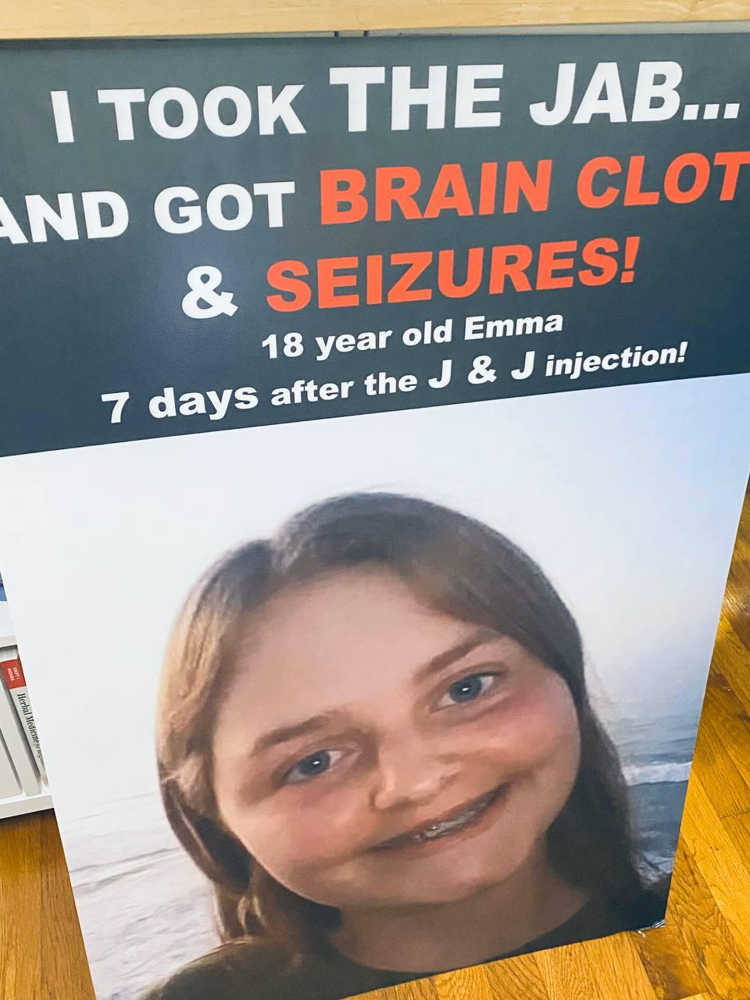
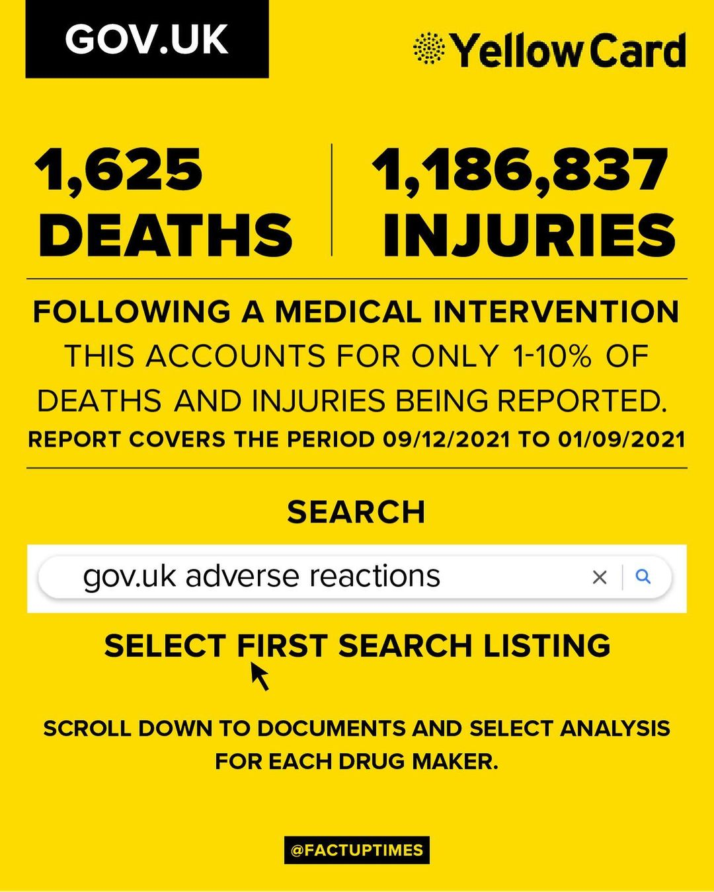

Your Highness,
Every year 2 million Deaths occur world-wide due medical negligence or medical malpractice. It perhaps is well suited if the numbers were pushed higher up (intentionally) and all the blame be put on a questionable "Medical calamity" and be forcibly resolved by mandating lock downs, putting up travel restrictions, putting up breathing restrictions and injecting people with a Bio-weapon (which will take out numerous people in the process and no one will ever think twice if the proposed cure was the cause of Death) without any debate or research on alternative treatments or credibility of vaccines itself .
It will probably be a better route rather than using a Military Hardware apparatus (or intervention) to cull a vast percentage of the Humanity and transfer all the wealth from poor to rich at the same time with the lock-downs.
Yes, and all it takes is to call for a Global Alliance on a Planned "Pandemic" and use the hands of their own leaders to kill their own citizenry.
EVENT 201 was planned just before the alleged pandemic took the world by storm and brought it to grinding halt! And we are witnessing a step by step progression towards their shady agenda to thwart entire world in never ending Medical Tyranny as prophesied by Eugenicist Aldous Huxley.
Australia is leading ahead with the planned democide, and rest of the world including Nepal will follow if we do not stop it on it's tracks as soon as possible.
First, it can't be called "Pandemic" for two clear reasons.
1.) It was manufactured in the Wuhan lab of Virology - (The Senate Hearing of Dr. Fauci establishes this Fact) which clearly makes it a ***Bio-weapon and this calamity a Bio-Warfare, not a Pandemic (in which case we are falling in the feet of the same people for the Treatment who were responsible for the outbreak!) ***
***2.) None of the countries or Laboratories have any sample of Wuhan Virus. No entity have isolated samples of 'Wuhan Virus' because none of the Vaccines contain the Wuhan Virus dead samples, which would save you form contracting the supposed Active Wuhan Virus by creating Anti-bodies against it. ***
Corona Virus Pandemic (aka Covid-19, aka SARS-CoV-2) is verifiable and unquestionably a 'fake pandemic' and an invasion on 90% of the planet through a mass deception and propaganda which follows the script of EVENT 201.
Only people who have their eyes and ears open can survive through this, everyone else will fall, if they keep going on with what all corrupt Health Organisations is deceptively directing everyone towards.
The Men Behind the world wide Wuhan Virus induced medical Terrorism!
Dr. Anthony Fauci (Bio-weapon Funding NIH Head)
Bill Gates ( ID 2020, Microsoft Owner, Vaccine Merchant, World wide Criminal, Pedophile Jeffery Epstein's Friend)
Klaus Schwab (Henry Kissinger Prodigy & World Economic Forum's Founder /Chief)
Henry Kissinger (US Economic Policy Maker, Klaus schwab Mentor)
David Rockefeller
George Soros
Hillary Clinton/Bill Clinton
C.I.A
Bilderberg
Event 201 (John Hopkins University) - A sophisticated meeting on simulated pandemic scenarios.
World Health Organisation (Tedros Adhonom Ghabreyesus - communist terrorist of Ethiopia turned WHO chief, who has No serious Background in Medical Community- He reached the position through heavy lobby of Bill Gates)
Why would they require protection from lawsuits, if the vaccines are 100% Safe and Effective? .. Maybe they are NOT?
Source- Republic Online Newspaper (India)
Like VAERS in US, AEFI is responsible for taking reports of the vaccine related injuries in India.. but, they are not taking any reports of Post vaccination Injuries, or Deaths like the VAERS does. They are crediting all the post vaccination deaths to the Cardiac Arrest, Brain Hemorrhage, Myocarditis, Blood Clots, Pericarditis which is caused by the vaccination itself as mentioned in FDA documents shown below. The Infamous deaths of Padma Bhusan Awardee Dr. K K Agrawal
For emphasis, neither the FDA & CDC nor State or county Covid-19 FAQ websites have revealed to the public over 20 adverse events discussed in a October 2020 meeting, that include death and myocarditis related to Covid-19 injections. See pg. 16 of document.
To make the matter more obvious, Indian Media picked up on deaths after Covid Shots were administered.

Now Imagine if you can, Nepal (being one of the main Labs for the Vaccine Experiments) have no system in place that accounts for vaccines related injuries and deaths. Why? Not only that People are being coerced by government to inject themselves with the poison if they want to travel, get pension, or carry on doing their job.
- It has been documented and evident that, the people who are directing the world towards vaccinations are the same people who funded the Wuhan Lab of Virology - which in return should render them as a war criminals and start their trials for Crime against Humanity ASAP, since "Gain Of Function" is a War Crime under Bio-weapon's act of US. But, the Liberal media has kept their mouth shut as directed by their overlords at Bilderberg, DAVOS, World Economic Forum and rather are working overtime in smearing, censoring and assassinating leaders who are speaking up!
Dr. Fauci claimed "that NIH was not funding any research at Wuhan Lab of Virology" which he himself debunked in the same sentence where he continued and said "..and if NIH is funding the research then we are doing along with the proper guidelines"! Which begs the question, why is he still leading the charge of Pandemic and Forcibly telling everyone to get vaccinated (with the Experimental vaccines which has hospitalized
***The man in front and center of this World wide chaos! The pandemic in-sued after this Evil man himself took over NIH some 40 years ago and started playing ball for Big Pharmaceutical companies and Pentagon. He did the same with the AIDS epidemic, where the Snake-oil merchant claimed that he has invented the medicines for AIDS patients which killed millions worldwide. -- Link ***
1.) The Real Efficacy of Vaccines.
The most reputed medical journal "Lancet" came out with the real study and completely debunked the alleged efficacy of these vaccines. I don't know what is misleading or a pure lie if this isn't.
2.) The Deaths and Side-effects after Vaccinations
This is taken from UK Government's official Site. This clearly show the mal-intent the whole Big-Pharma Led Pandemic response has to do with.

same thing in US, ISRAEL, and AUSTRALIA!
3.) Australia’s Gladys Berejiklian was bribed, blackmailed by Big Pharma to impose covid “vaccine” mandate.
The Wuhan corona virus (Covid-19) continues to be a cash cow for the corrupt political elite on both sides of the aisle, along with their handlers. The good news is that some of these shameless profiteers, including Gladys Berejiklian of New South Wales (NSW), Australia, are finally getting exposed for their crimes against humanity.
4.) Vaccinated are being Hospitalized world wide!
5.) Same people were involved in Swine Flu H1N1. Similarities are identical in how they pushed fear on the public in order to produce a vaccine, making Big Pharma lots of money and steadily ramping up the mind control of the population to embrace vaccines.
6.) Remember the time in history when Dr. Fauci accused children of spreading AIDS in the 80s & Exposed the AIDS patients to Drug Deadlier than the Disease? https://thewashingtonstandard.com/remember-when-fauci-accused-children-of-spreading-aids-in-the-80s-exposed-the-aids-patients-to-drug-deadlier-than-the-disease/
7.) Former CBS Healthwatch Reporter Reveals Parallels between Covid Hoax and his HIV/AIDS Investigation.
*
Rappoport wrote:
In my current series of articles on fake epidemics—Ebola, Zika, Swine Flu—I’ve established that all the symptoms of these so-called diseases can be explained without invoking a virus.
*
This is a key.
It was my method, when I wrote my first book, AIDS INC., in 1988.
At that time, I looked into the AIDS “high-risk groups” listed by the CDC—Africans, Haitians, IV drug users, gay men, hemophiliacs, and blood-transfusion recipients—and I showed that the immune-system collapse (the hallmark of AIDS) in these groups could be explained without the need to refer to HIV at all.
“AIDS” was not one condition.
It was immune-deficiency caused, in various people, by a variety of factors. The hypnotic medical trick was welding all these sick and dying people together under one umbrella label: “AIDS.”
But the truth was—depending on which “AIDS group” and which individuals you were looking at—you had debilitating medical and street drugs destroying immune systems; you had devastating hunger and starvation; lack of basic sanitation; grinding poverty and war; vaccination campaigns; adrenal collapse…
Likewise, today, with a vast relabeling effort, any patient with any sort of lung problem, or flu-like illness, can be diagnosed and repackaged as a case of “COVID-19.” The loose set of so-called COVID symptoms allows for such fraudulent and deceptive diagnosis.
This is the central con.
*Back in 1988, after combing through medical journals, I found that the number-one cause of T-cell depletion (immune-system collapse) in the world was malnutrition/hunger/starvation. Yet, in Africa and Haiti, and even in certain Western patients surviving on junk-food diets, T-cell depletion was routinely called HIV/AIDS.
*
Suddenly, a virus was invoked to substitute for malnutrition.
In fact, in Africa, the earlier label for AIDS was “slim disease.” That fatuous idea was invented via a deeply flawed investigation in Uganda, where the patients were “slim” simply because they were malnourished and starving, and consequently losing weight.
In New York and San Francisco, some gay men were inhaling a brutally dangerous street drug called “poppers.” Severe lung damage was just one of the drug’s many devastating effects. Profound immune-system deficiency was sure to follow.
In AIDS INC., I lay out a whole parade of immune-system destroyers in the high-risk groups; and none of these destroyers has anything to do with a virus.
—Just as in Wuhan, in 2019, the deadly chronic air pollution hanging over the city and causing pneumonia—the original hallmark of so-called COVID-19—had nothing to do with a virus.
So when uninformed people bleat, “People are dying, it must be the virus,” whether they’re talking about AIDS or COVID, they’re completely off the rails and on the wrong track.
Here is another parallel between AIDS and COVID: the test for the virus.
I’ve spent many articles detailing how the PCR test for SARS-CoV-2 spits out false-positive results like water from a fire hose. A doctor will tell a patient he’s infected simply because the sensitivity of the test is so jacked-up it’ll register positive on a speck of dust on the moon. This is artificial case-number building at its finest.
Well, back in 1988, there was a similar situation. The HIV antibody test was turning out a Niagara of false-positive results. I devoted a chapter in my book to the results of my extensive medical-journal search.
The evidence was undeniable. Both basic types of HIV antibody tests—the Elisa and the Western Blot—were, admittedly, deeply flawed. There was no gold standard for testing.
Cross-reactions were abundant: the test for HIV would come up positive for a whole host of reasons that had nothing to do with HIV, or any other virus. One reason? A person had received the hepatitis B vaccination. Well, in the 1980s, a campaign was launched to recruit gay men into a large study of the new vaccine.
A third parallel between AIDS and COVID: expanding the definition of the “disease” in order to rope in as many patients, and build up as many case numbers, as possible.
The 1987 CDC definition of AIDS, which I printed in my book in full, took up 15 pages. With a bit of rigmarole, a doctor could diagnose AIDS in a person who had almost any kind of bacterial infection.
The CDC definition of COVID-19 allows a diagnosis when the patient has nothing more than a cough, or chills and fever, accompanied by a positive PCR test.
*There are other parallels between AIDS and COVID I could list, but you get the picture. In both instances, the hoax is rampant. *
A few years after I published AIDS INC., I became aware of a new argument: the very existence of HIV was in doubt. Consulting the independent literature on the subject, I became convinced no one had proved HIV existed. In these pages, I’ve published, several times, an illuminating interview journalist Christine Johnson conducted with Australian biophysicist, Eleni Papadopulos, about HIV isolation. Papadopulos makes a compelling case that, according to rigorous rules laid down by mainstream researchers, HIV hasn’t been isolated.
As my readers know, for the past year I’ve been offering compelling evidence that SARS-COV-2 has never been proven to exist. Researchers twist and reverse the meaning of the word “isolation,” in order to “demonstrate” the virus is real.
The non-existence of HIV and SARS-CoV-2 doesn’t surprise me. After all, the so-called symptoms of both “conditions” can be explained without reference to a virus.
In both cases, the reality, which lights up like a giant neon sign in the darkness, is FRAUD.
8.) ICAN obtained nearly 3000 Dr.Fauci emails from the begining of the Pandemic and Twitter blocks ICAN's Account to prevent their release!
https://www.icandecide.org/ican_press/ican-obtains-nearly-3000-fauci-emails-from-the-beginning-of-the-pandemic-and-twitter-blocks-icans-account-to-prevent-their-release/
9.) Why would a Political group (US Liberals) cry and moan about people not vaccinating against a Flu which allegedly kills people but then go ahead and then de-criminalize "intentionally infecting people with HIV-AIDS"?
https://thewashingtonstandard.com/no-longer-felony-knowingly-infect-someone-hiv-aids-california/
10.) Bombshell: Official Government Docs Comparison Suggests “Fully Vaccinated” Are Developing AIDS
Latest UK PHE Vaccine Surveillance Report figures on Covid cases show that doubly vaccinated 40-70 year olds have lost 40% of their immune system capability compared to unvaccinated people. Their immune systems are deteriorating at around 5% per week (between 2.7% and 8.7%). If this continues then 30-50 year olds will have 100% immune system degradation, zero viral defence by Christmas and all doubly vaccinated people over 30 will have lost their immune systems by March next year.
11.) But still Australian Government & Court (if any of it still exists anymore) is mandating the vaccinations anyway!
12.) No One has ever proven that SARS-CoV-2 Exists! - Yes you heard that Right. None Whatsoever! https://thewashingtonstandard.com/since-no-one-has-proven-sars-cov-2-exists-what-is-the-test-testing-for/
13.)Recent Expose of Vaccine Manufacturers.
- www.projectveritas.com recently exposed every vaccine companies and their sinister agenda through their employees.